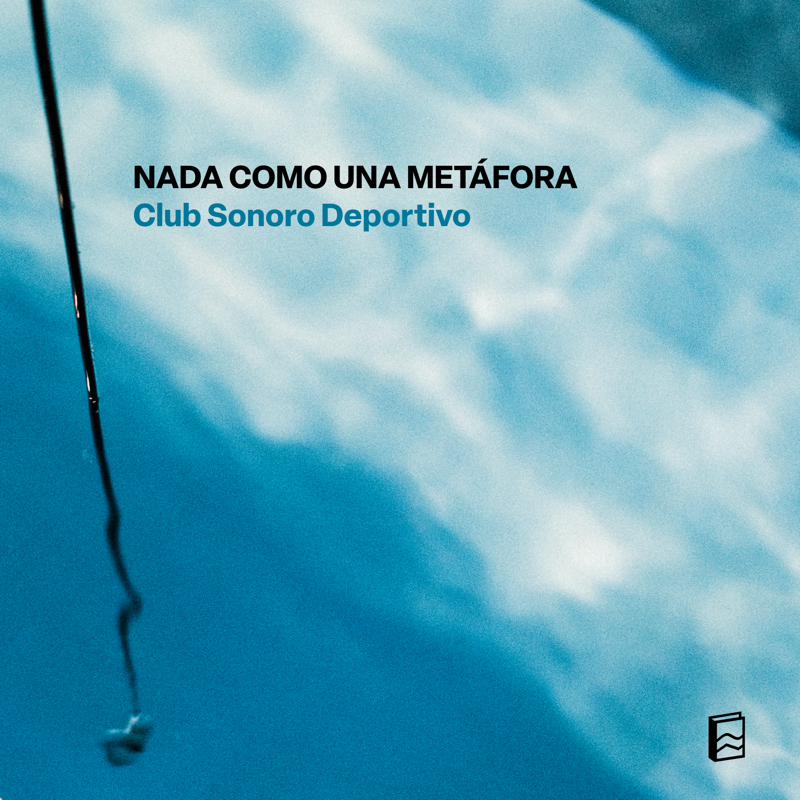

Nada como una metáfora
Nada como una metáfora es un concierto sonoro-performativo en el que nadadorxs operan la piscina como un instrumento.
Créditos: Registro de proceso de Aproximaciones subacuáticas en Piscina de Campo Deportivo Juan Gómez Millas, Universidad de Chile, 2025-2026. © Sebastián Arriagada.
Álbum en vivo

- Máster
- Entrada
- Oblicuo
- Nenúfar
- Nado lento
- Vocal
- Subacuático
- Rítmico
- Manatí
Créditos: Publicado el 22 de julio de 2026 en el sello Archivo Veintidós.
Performers: Amparo Saona Ríos, Deysi Cruz, Vásquez, Inti Vega Jones, Jenniffer Verdugo Merello, Sergio Menares Navarro, Sofía Hurtado Tapia.
Entrenadora: Gissela Cabrera.
Nadadorxs: Amanda Aravena Letelier, Ana Campos Canessa, Andrea Rojas Milla, Andrés González, Beatriz Martínez Améstica, Camila Torres Ceballos, Claudia Williamson, Estefanía Vilches, Ignacio Ruano Suárez, Irene Farías Valdés, Javier Ramírez Arenas, María José Bravo, Matilda Morales, Natalia Lam, Ricardo Ramírez Lepe, Rocío Albornoz Marambio, Rodrigo Norambuena, Tamara Arenas Brito, Tamara Uribe Rojas, Yanniry Jaspe Sanguino.
Autoría: Club Sonoro Deportivo.
Idea original: Fernanda Fábrega Rubio.
Dirección: Fernanda Fábrega Rubio y Matías Serrano Acevedo.
Programación en VCV Rack: Santiago Corvalán Garretón.
Grabación, mezcla y masterización: Santiago Corvalán Garretón.
Fotografía portada: © Sebastián Arriagada.